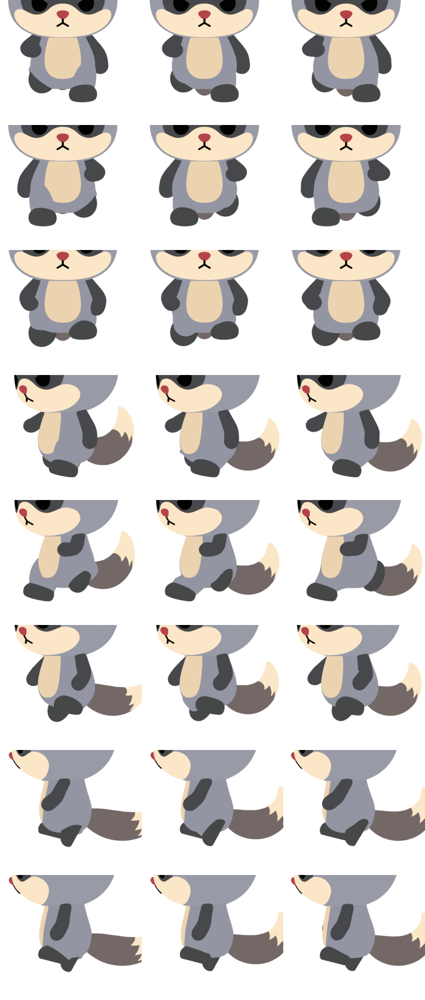
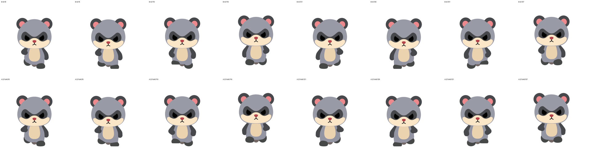
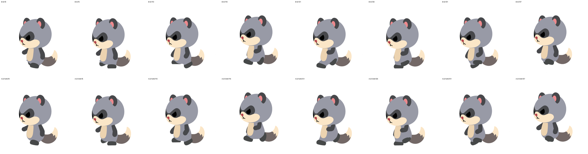
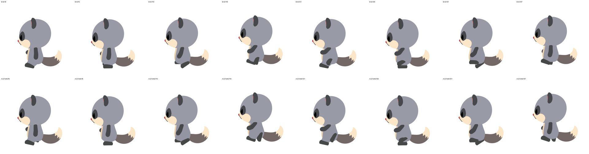
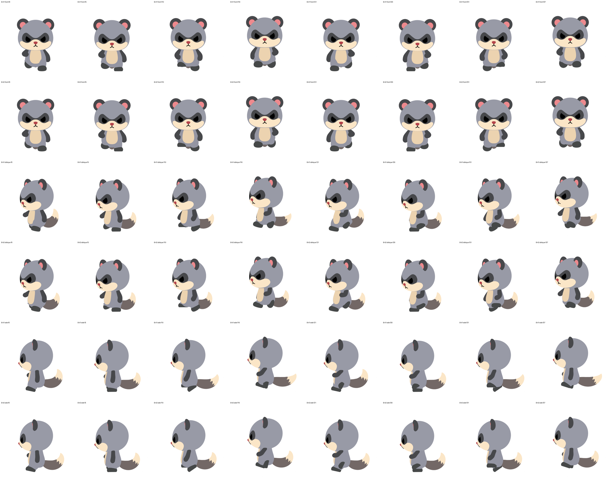

2026-09-29 夜の更新：B（骨リグ）を 2 回目の改良版に差し替えました。あわせて、腕の合否の決め方を見直し、A と B を同じ基準で測りました。
1/4 速度：
B の 1 回目で出ていた「お腹の下側の欠け」（正面・斜めの 2 段目）が、2 回目では消えています。




B の 1 回目と 2 回目の比較：

検査には 2 種類あります。どちらも、採用済みの 221c と静止姿勢で正しく測れることを先に確認してから使っています。
| 検査 | A 221d42 | B 2 回目 |
|---|---|---|
| 手が前に来たとき、お腹の前にあるか | 合格 | 合格 |
| 後ろに振ったとき、手が体に隠れすぎないか | 合格 | 合格 |
| 腕の見える部分がちぎれて見えないか | 合格 | 合格 |
| お腹の模様が腕以外（腿など）に削られないか | 合格 | 合格 |
| 腕の振り幅が設計の範囲内か | 合格（後ろ 3°／前 42°） | 合格（同じ） |
| 足の滑り・床へのめり込み | 合格 | 合格（ほぼ 0） |
| 1 コマごとの見え方の急な変化（参考値） | 基準内（最大 3.7%/コマ） | 基準内（最大 3.8%/コマ） |
| 3D 上の手の腰へのめり込み（参考値） | 画面上は見えない | 画面上は見えない |
「1 コマごとの見え方の変化」は、奥の腕の扱いを直すまでは参考値にしています。
違いが残るのは作り方の側です。
| A 今の方法 | B 骨リグ | |
|---|---|---|
| 作り方 | 自作の変形処理・ドライバー 1,261 本、キーフレームは 0 | 骨 34 本・IK・キーフレーム 1 本。Blender の標準機能だけ |
| 手で直せるか | 設計値を変えて作り直す | タイムライン・グラフで直接直せる |
| iOS への書き出し | 不可（毎フレーム形を作り直すため） | glTF で再生を確認（一部の色は焼き込みが必要） |